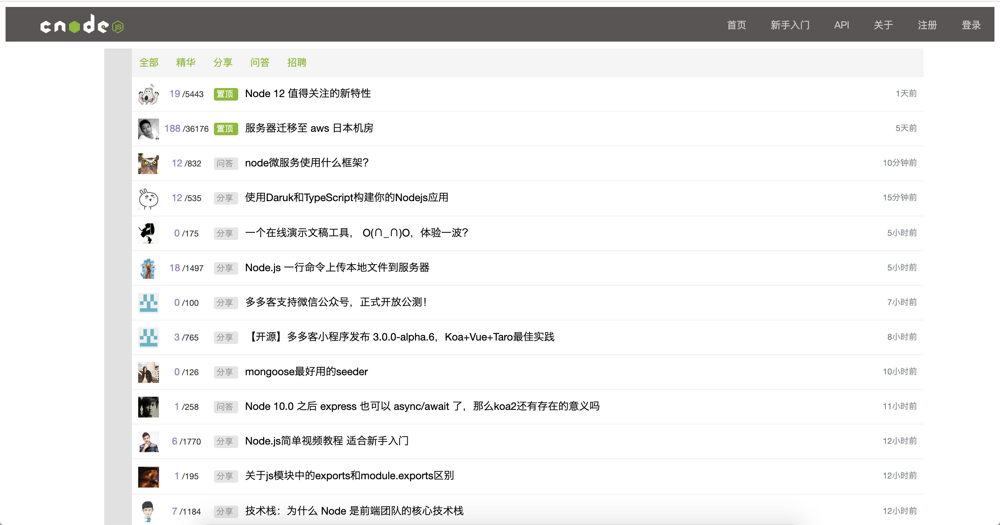
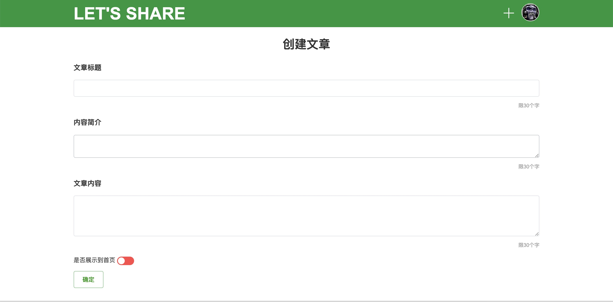
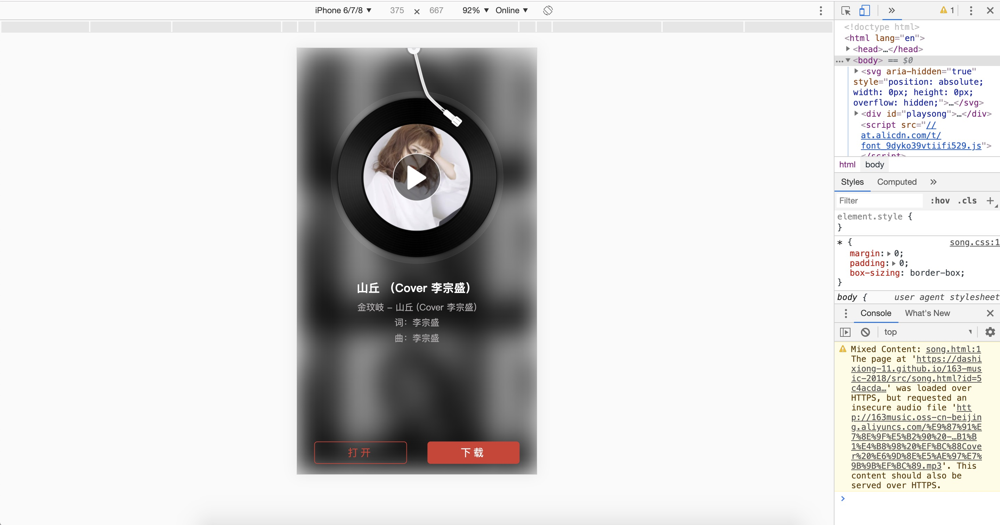
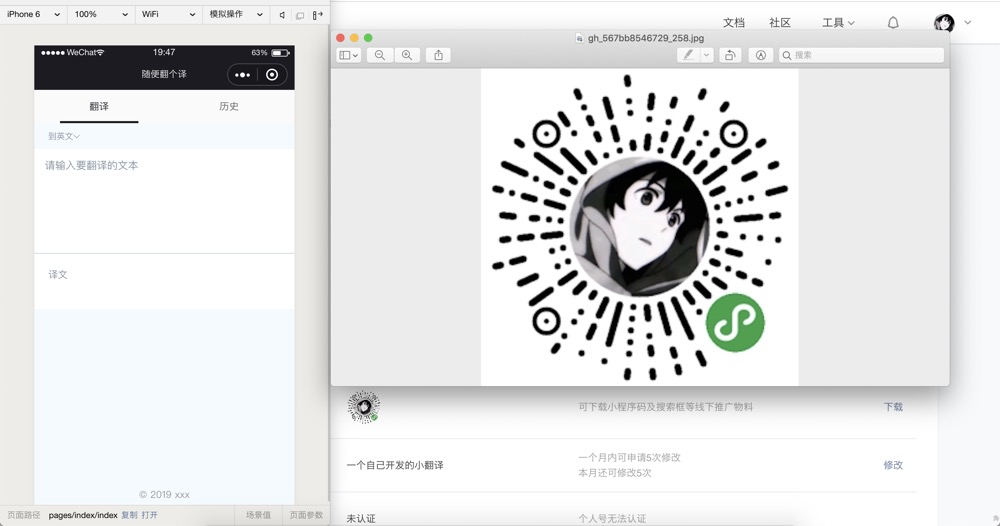
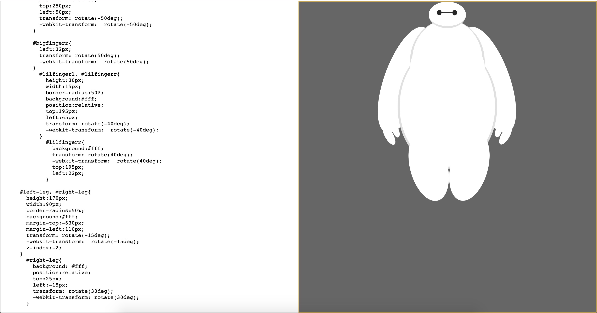
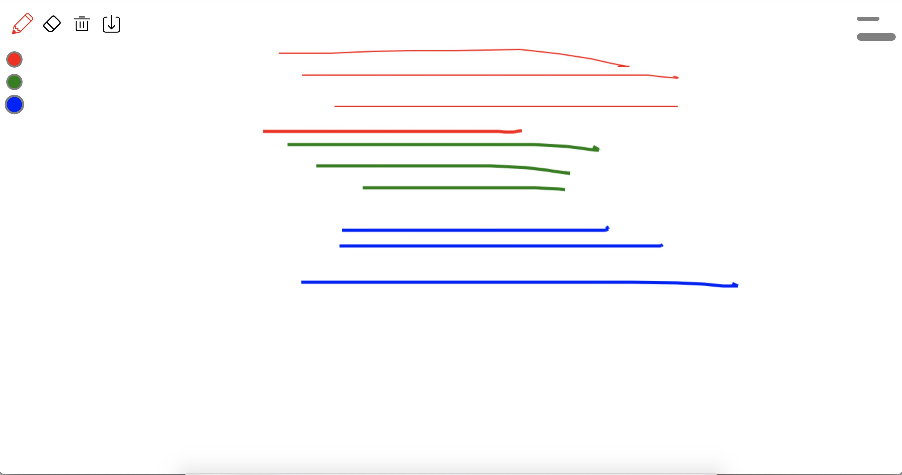

Recent
Works
仿CNODE社区

- 项目介绍: 该项目使用 Vue 仿了一个CNODE社区,是一个单页面应用主要有首页，帖子详情，用户信息等页面。项目以 Vue CLI 为基础创建项目模版，通过 Vue Router 实现路由的跳转、异步加载、用 Axios 获取数据。并用原生jq写了一个分页组件
- 技术栈: Vue CLI/ Vue2/ Axios/ Vue Router// ES6/ Npm/ Grid
- 源码连接: github.com/dashixiong-11/CNODE
- 预览连接: dashixiong-11.github.io/CNODE
共享博客

- 项目介绍: 该项目使用 Vue 实现了一个在线博客分享的平台。包含首页、用户文章列表、个人管理等页面，实现了登录、注册、编辑、发布等功能。项目使用 Grid 作页面布局，以 Vue CLI 为基础创建项目模版，使用 Less 作 CSS 预处理，引用 Element UI 作交互。通过 Vue Router 实现路由的跳转、异步加载、权限验证等，通过 vuex 实现状态管理，用 Axios 获取数据，并对接口进行了封装
- 技术栈: Vue CLI/ Vue2/ Axios/ Vue Router/ Vuex/ ES6/ Npm/ Grid/ Less
- 源码连接: github.com/dashixiong-11/vue-blog-preview
- 预览连接: dashixiong-11.github.io/vue-blog-preview/#/
仿网易云音乐

- 项目介绍: 该项目是一个有管理页面的仿网易云音乐项目，管理页面主要有 创建歌曲,编辑歌曲信息,创建歌单 等功能,播放歌曲页面实现了歌词滚动效果,使用了 MVC的设计模式,使用 EventHub实现组件通信,歌曲的储存和歌曲信息字段的储存分别用的是七牛和LeanCloud的api
- 技术栈: ES6/MVC/EventHub
- 源码连接: github.com/dashixiong-11/163-music-2018
- 预览连接: dashixiong-11.github.io/163-music-2018/src/index.html
微信小程序

- 项目介绍: 一款提供翻译功能的微信小程序，遍历有浏览所有翻译历史之意。该项目以百度翻译 API 为服务器域名提供支持，主要包含翻译首页、语言列表页和翻译历史页。项目逻辑简单，页面清新，提供了近 20 种语言选择，欢迎尝试。
- 源码连接: github.com/dashixiong-11/wxfy
- 预览连接: 扫描途中二维码
一个大白

- 项目介绍: 是一个使用纯原生 JS 开发的，动态显示 CSS 画一个大白过程的小作品。该作品主要思路是通过间隔计时器遍历预先设置在 preview 标签内代码，将其一个个显示在页面上，并在 style 标签上作同样处理，以使代码 CSS 生效。
- 源码连接: github.com/dashixiong-11/baymax
- 预览连接: dashixiong-11.github.io/baymax/
画板

- 项目介绍: 是一个使用纯原生 JS 开发的，主要利用 HTML 5 的 Canvas API ，是我在学习原生 JS 及 Canvas 过程中开发的小工具。 其提供在 PC 及手机端在线画画、橡皮擦、画笔调色、画作删除等功能，并支持画作下载。
- 源码连接: github.com/dashixiong-11/drawing-demo
- 预览连接: dashixiong-11.github.io/drawing-demo/
About
Me
熟练 HTML、DIV + CSS 的页面布局，能根据设计图像素级完成页面制作
熟悉 HTML 5 及语义化，了解 Canvas 动画制作，掌握 CSS 3 动画、过渡效果等常用技术熟悉原生 JavaScript，会使用 ES6+ 常用规范，了解 TypeScript，了解 jQuery 常用 API 及思想
了解 Vue 常用功能，如生命周期、组件、数据响应式等概念，能够使用 Vue 全家桶开发项目， React 正在学习中
熟悉模块化、工程化开发流程，能够配置 Webpack
有移动端开发经验，会使用REM、vw/ vh、响应式 等技术制作适配手机设备的页面
了解 HTTP 相关知识，了解常见的 Web 性能优化方案
了解 简单的后端 知识
熟练使用 VsCode、iTerm、Sass、Git 等开发工具
个人经历
2016年毕业于 郑州轻工业大学,环境艺术设计专业，毕业后从事本行工作， 工作期间接触了前端，发现自己热爱技术，迄今为止利用所有业余时间自学前端近一年。 热爱 coding，享受调试代码及解决 bug 的过程，享受通过各种代码组合实现自己成果的过程。有良好的代码规范，热衷分享，崇尚开源文化。